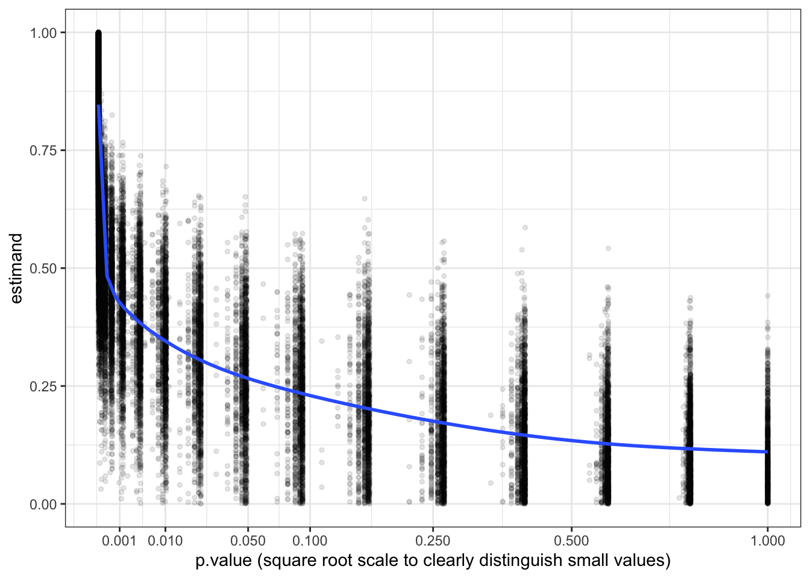

N <- 50
design <-
declare_model(N = N, b = runif(1, min = 0, max = 1), u = runif(N, min = 0, max = 1),
potential_outcomes(Y ~ (u < b)*Z + (u > (1 + b)/2))) +
declare_assignment(Z = complete_ra(N)) +
declare_inquiry(ATE = b[1]) +
declare_measurement(Y = reveal_outcomes(Y ~ Z)) +
declare_estimator(Y ~ Z)The humble \(p\)-value is much maligned and terribly misunderstood. The problem is that everyone wants to know the answer to the question: “what is the probability that [hypothesis] is true?” But \(p\) answers a different (and not terribly useful) question: “how (un)surprising is this evidence given [hypothesis]?” Can \(p\) shed insight on the question we really care about? Maybe, though there are dangers.
This post is inspired by conversations with @david_colquhoun who has been doing a lot of work on the misinterpretation of p-values (see especially “The false positive risk: a proposal concerning what to do about p values”). David poses the question “what is the probability that the null hypothesis is true given the observed \(p\)-value?” and provides a nice approach to answering this in terms of a “false positive risk.” The approach we present here is similar in spirit though based on a simulation approach given defined priors rather than being based on likelihood ratios.1
The key insight is that there is something to the intuition that if the world doesn’t look how it ought to look if indeed some hypothesis is right, then maybe that hypothesis isn’t right. Formally the connection comes via Bayes rule; the \(p\)-value (or, likelihood) plays a big role in Bayes’ formula for calculating the quantity of interest: posterior beliefs in hypotheses, given data.2 To use the rule though you need information on prior beliefs. Unfortunately, since “frequentist” statistics make no use of prior beliefs many researchers generally don’t report priors (indeed since frequentists and Bayesians think about probabilities differently, some will balk at the idea).
But what if you did have access to priors? With priors, you can construct Bayesian inferences from the diagnosis of a frequentist design. If we encode our priors into the population declaration then we can map from \(p\) to posteriors and let \(p\) answer the question we keep on wanting it to answer.
Here is an illustration. Unlike most other designs we have looked at, in this design the estimand has a distribution. For simplicity we consider a design with a binary outcome; the estimand is the average treatment effect (or in epidemiology the “absolute risk increase”). The distribution for b in our model of the world reflects our beliefs about the estimand: we assume that it is distributed uniform over 0 and 1.3
When we simulate this design, each run takes a different estimand (b) from the uniform distribution, generates data and calculates effects and \(p\)-values.
simulations <- simulate_design(design) Now if we graph the estimand from each run against the \(p\)-values from each run we can see the distribution of estimands conditional on the \(p\)-value. We can now think of each vertical slice of this graph as displaying the posterior distribution of estimands given \(p\).
simulations %>%
ggplot(aes(y = estimand, x = p.value)) +
geom_point(size = 1, alpha = 0.1) +
stat_smooth(se = FALSE) +
scale_x_continuous(trans='sqrt', breaks = c(0.001, 0.01, 0.05, 0.1, 0.25, 0.5, 1)) +
xlab("p.value (square root scale to clearly distinguish small values)")
We see from the graph that a Bayesian who has access to the study design and who learns only about the \(p\)-value from a study should update sharply about the size of the treatment effect.4 If they see a very low \(p\) they should infer that the effect is large. Conversely, if they see a high \(p\) they should infer that the effect is probably quite small: in other words, they do infer, contrary to frequentist wisdom, that absence of evidence is evidence of absence.
Posterior beliefs about a null require prior mass on the null
We have shown a set of posterior distributions and marked the posterior mean, but we have not calculated the probability that the null is true. The reason is that, if the prior places a zero probability on the null hypothesis \(b=0\), then so will the posterior. To form a posterior on the null being true, one needs a prior distribution that is consistent with the null. One possibility is that you might think of the null hypothesis as being about a range (“the ate is small”) rather than a value (“the ate is 0”). Another possibility is that you really put prior probability mass on a point null, which is what we do here.
Here we make a new design, in which we specify the prior belief that the true effect is 0 with 50% probability, and otherwise is flat over [0,1]. Remember, our priors are coded in the distribution we provide for b in our model of the world. Here’s the modified design:
pop_mass <- declare_model(N = N,
b = sample(c(0, runif(1, min = 0, max = 1)), prob = c(.5, .5), size = 1),
u = runif(N, min = 0, max = 1))
design_mass <- replace_step(design, 1, pop_mass)We simulate the design again, but this time on the \(y\)-axis we plot the proportion of simulations in which the true effect is 0 at a given \(p\)-value: in other words, we graph the posterior probability that the estimand is zero.
simulations <- simulate_design(design_mass)The \(p\)-value increases with the probability that the null hypothesis is true.
Warning: Posteriors depend on the design, not just on the results
It is nice that one can make inferences about estimands using \(p\)-values. But unfortunately, there is no general mapping from \(p\)-values to posteriors. Obviously priors matter. Less obviously, perhaps, you also need to have access to the design itself, which determines the likelihood. For instance, the inferences made from knowledge of a \(p\)-value would be different for large and small studies.
We illustrate briefly by expanding design_mass to two designs with different \(N\)s and showing the mapping from \(p\)s to posteriors on the null for each of these.
designs <- redesign(design_mass, N = c(50, 500))We see here that for any \(p\)-value your belief that the null is true will be greater in the large \(N\) case than in the small \(N\) case (of course if the null is not true, then you expect to have a smaller \(p\) in the large \(N\) case than in the small \(N\) case).
Implications for frequentist friends
Design diagnosis does not substitute for proper Bayesian analysis. However, there is a payoff for Bayesians with frequentist friends. If you can get them to encode their prior beliefs and declare their designs, then you get a tool to quickly figure out what they should believe given what they find.
Footnotes
David’s goal is more ambitious also as he is advocating for a new reporting norm for conveying the strength of evidence and so he explicitly seeks a statistic that is easy to calculate and can be calculated with a kind of common prior.↩︎
If \(p\) is the probability of the data under the null, and \(q\) is the quantity we care about (the probability of the null given the data), \(\pi\) is the prior on the null, and \(p'\) and \(\pi'\) are corresponding quantities for a complementary hypothesis, then Bayes rule says \(q = p \pi /(p \pi + p' \pi')\).↩︎
More precisely we assume a process in which for effect \(b\), share \(b\) of the units are affected positively by treatment, share \((1-b)/2\) has outcome \(Y=0\) regardless and share \((1-b)/2\) has outcome \(Y=1\) regardless. Note that this is an informative prior—in particular it rules out the possibility of negative effects.↩︎
It’s easy and interesting to do the same thing to assess what one should believe about the estimand given the estimate (or given both the estimate and the \(p\)-value.)↩︎